Vamos a ver el ejemplo de cómo obtener la matriz y lista de adyacencia del siguiente grafo no dirigido:
Cánovas Peña, J. S. (s. f.). Teoría de grafos. Departamento de Matemática Aplicada y Estadística. Figura 1.2: Ejemplos de grafo simple, multigrafo y pseudografo, p. 3.SOLUCIÓN.
Paso 1: debemos identificar los vértices y las aristas que los unen dentro del grafo. En este caso, observamos que:
El vértice 1 está conectado a los vértices 2 y 4.
El vértice 2 está conectado a los vértices 1 y 5.
El vértice 3 está conectado al vértice 5.
El vértice 4 está conectado a los vértices 1 y 5.
El vértice 5 está conectado a los vértices 2, 3 y 4.
Paso 2: El siguiente paso es crear la lista de adyacencia. Para ello, simplemente mediante una lista ordenaremos a cada vértice con sus respectivos nodos vecinos:
Entonces, la Lista de Adyacencia es:
Paso 3: Ahora procedemos a crear la matriz de adyacencia de nuestro grafo.
Primero, tenemos que identificar la cantidad de nodos que hay, ya que si el grafo tiene n vértices, la matriz de adyacencia será de tamaño n×n.
En este caso usaremos una matriz 5×5 (ya que hay 5 vértices) y la inicializamos con valores en cero.
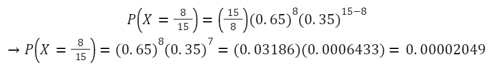
Finalmente, llenaremos la matriz de forma que cada posición (i, j) tendrá un 1 si hay una conexión entre el vértice i(filas) y el vértice j(columnas), y un 0 si no la hay.
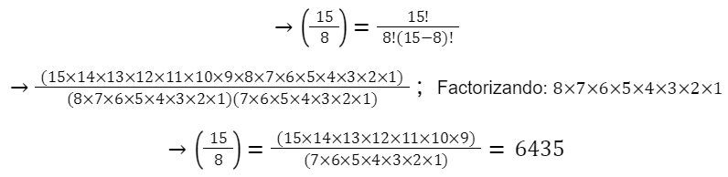
Así finalizamos el proceso para obtener la matriz y lista de adyacencia del grafo.
━━━━━━━━━━━━━━━━━━━ ◦ ❖ ◦ ━━━━━━━━━━━━━━━━━
4.2 Matrizz y Lista de Adyacencia
Ahora, haremos un ejemplo sobre cómo obtener la matriz y lista de adyacencia de un grafo dirigido.
Paso 1: El proceso será muy similar al anterior. Primero tenemos que observar cómo está constituido el grafo: en este caso tenemos los vértices numerados del 1 al 6 y las aristas están dirigidas entre ellos. Observemos las conexiones:
El vértice 1 tiene una arista dirigida hacia el vértice 6.
El vértice 2 tiene una arista dirigida hacia el vértice 1 y 4.
El vértice 3 tiene una arista dirigida hacia el vértice 2.
El vértice 4 tiene una arista dirigida hacia el vértice 5 y un lazo (una arista que regresa al mismo vértice).
El vértice 5 no tiene aristas salientes.
El vértice 6 tiene una arista dirigida hacia el vértice 4.
Paso 2:En un grafo dirigido, la lista de adyacencia refleja las conexiones en una dirección específica. Esto significa que cada arista tiene un vértice de origen y un vértice de destino, y solo el vértice de origen incluirá al vértice de destino en su lista de adyacencia. Por lo tanto, en este caso la lista de adyacencia que obtenemos es:
Paso 3:
Ahora, para elaborar la matriz de adyacencia, primero identificamos el número de vértices que este contiene, ya que la matriz de adyacencia será de tamaño nxn (siendo n la cantidad de vértices). Inicialmente, le damos valores de cero, en este caso, la matriz será de 6x6.
Paso 4:
Posteriormente, comenzamos con el llenado de la matriz. Para ello, por cada arista dirigida del grafo, coloca un 1 en la posición (i,j) de la matriz si hay una arista dirigida desde el vértice i al vértice j. Si no existe una arista, deja un 0 en esa posición.
Si algún vértice tiene un lazo (una arista que apunta a sí mismo), coloca un 1 en la posición diagonal correspondiente, es decir, en (i,i).
De esta forma obtenemos la siguiente matriz:
Así finalizamos el proceso para obtener la matriz y lista de adyacencia del grafo dirigido.
━━━━━━━━━━━━━━━━━━━ ◦ ❖ ◦ ━━━━━━━━━━━━━━━━━
4.3 Recorrido DFS
A continuación veremos un ejemplo de cómo se realiza la búsqueda a profundidad (DFS) con el siguiente grafo:
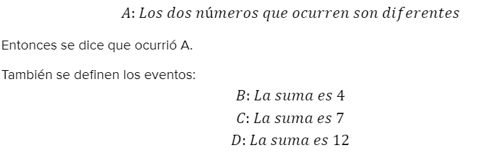
SOLUCIÓN.
Paso 1: Iniciamos el recorrido en el nodo "a".
Partimos en el nodo "a" y lo marcamos como visitado.
Lista de visitados: a
Desde aquí, tenemos dos opciones de vecinos a visitar: b y d. En DFS, seguimos el camino en profundidad, así que elijamos el primer vecino en orden alfabético, que en este caso es "b".
Paso 3: Moverse al nodo "c".
-Llegamos a "c" y lo marcamos como visitado.
-Lista de visitados: a → b → c
-En "c", encontramos dos vecinos: b y d.
-Como "b" ya ha sido visitado, omitimos esa opción y nos movemos al siguiente vecino no visitado, que es "d".
Paso 4: Moverse al nodo "d".
-Llegamos a "d" y lo marcamos como visitado.
-Lista de visitados: a → b → c → d
-En "d", tenemos tres vecinos: a, b, y c.
-Sin embargo, todos estos vecinos ya han sido visitados. Por lo tanto, no hay más nodos que explorar desde "d".
Paso 5: Retroceso.
-Dado que ya no hay vecinos no visitados desde "d", retrocedemos al nodo anterior, que es "c".
-En "c", tampoco quedan vecinos no visitados, por lo que retrocedemos nuevamente a "b".
-En "b", tampoco hay vecinos no visitados, así que retrocedemos finalmente a "a".
En "a", todos los vecinos han sido explorados, lo que indica que el recorrido DFS está completo.
Paso 6: Finalmente, podemos concluir que el recorrido DFS encontró y visitó todos los nodos del grafo en el orden a → b → c → d , asegurándose de que cada rama ó “camino” se agotara completamente antes de pasar a otra.
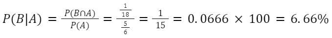
━━━━━━━━━━━━━━━━━━━ ◦ ❖ ◦ ━━━━━━━━━━━━━━━━━
Con base en su experiencia un médico ha recabado la siguiente información, relativa a las enfermedades de sus pacientes: 5% creen tener cáncer y
lo tienen, 45% creen tener cáncer y no lo tienen, 10% no creen tener cáncer pero si lo tienen; y finalmente 40% creen no tenerlo, lo cual es cierto.
De entre los pacientes del doctor estas cifras de porcentaje implican las siguientes probabilidades para un paciente seleccionado al azar. Calcula:
a) Tenga cáncer si no cree tenerlo.
b) Cree tener cáncer cuando no lo tiene.
c) Crea tener cáncer cuando sí lo tiene.
Paso 5: Usaremos la fórmula de probabilidad condicional.
a) Tenga cáncer si no cree tenerlo.
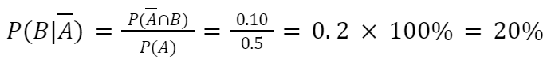
Resultado a) La probabilidad de que un paciente tenga cáncer dado que no cree tenerlo es de 0.2 o 20%. Esto
sugiere que incluso si un paciente no cree tener cáncer, todavía hay una probabilidad no despreciable de tener la enfermedad.
b) Cree tener cáncer cuando no lo tiene.
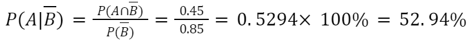
Resultado b) La probabilidad de que un paciente crea tener cáncer cuando en realidad no lo tiene es aproximadamente
de 0.5294 o del 52.94%. Esto sugiere que la creencia de tener cáncer podría no ser muy indicativa de la presencia real de la enfermedad.
c) Crea tener cáncer cuando sí lo tiene.
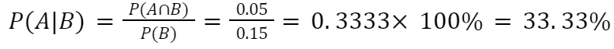
Resultado c) La probabilidad de que un paciente crea tener cáncer cuando realmente lo tiene es de 0.3333,
aproximadamente 33%. Esto indica que la creencia de tener cáncer no siempre coincide con la presencia real de la enfermedad.
━━━━━━━━━━━━━━━━━━━ ◦ ❖ ◦ ━━━━━━━━━━━━━━━━━
4.3 Independencia
4.3.1 Ejemplo 5
Consideremos un lote grande de artículos, digamos 10000. Supongamos que el 10% de estos artículos es defectuoso y el 90% no.
Se escogen dos artículos. ¿Cuál es la probabilidad de que ambos no sean defectuosos?
Paso 2: Usando la fórmula de intersección de dos eventos independientes.
Si suponemos que el primer artículo se sustituye antes de elegir el segundo, entonces se puede suponer que los eventos
A y B son independientes y, por lo tanto tenemos la probabilidad de seleccionar dos artículos no defectuosos:
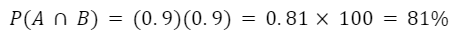
Resultado. Podemos concluir que la probabilidad de seleccionar dos artículos no defectuosos de un lote grande,
donde el 10% de los artículos son defectuosos y el 90% son no defectuosos, es del 81%. Esto significa que hay una alta
probabilidad de que ambos artículos seleccionados al azar no sean defectuosos.
La independencia de los eventos es crucial en este caso. Dado que se asume que los eventos (la no defectuosidad de los
artículos) son independientes, la probabilidad conjunta de que ambos eventos ocurran es simplemente el producto de las
probabilidades individuales. Este resultado refleja la intuición de que si la selección de un artículo no afecta la selección
del siguiente, entonces la probabilidad de ambas ocurrencias es simplemente el producto de las probabilidades individuales.
━━━━━━━━━━━━━━━━━━━ ◦ ❖ ◦ ━━━━━━━━━━━━━━━━━
4.3.2 Ejemplo 6
Supongamos que un dado normal se lanza dos veces. Calcula para:
a) El primer dado muestra un número par.
b) El segundo dado muestra un 5 o un 6.
Hay un total de 36 resultados posibles al lanzar dos dados, ya que hay 6 posibilidades para el primer dado y 6
posibilidades para el segundo dado, lo que resulta en 6×6=36 resultados posibles en total.
* Para el evento A: "el primer dado muestra un número par", hay 18 resultados favorables, ya que hay 3 números
pares (2, 4 y 6) en un dado de 6 caras, y 3 posibilidades para el segundo dado.
* Para el evento B: "el segundo dado muestra un 5 o un 6", hay 12 resultados favorables, ya que hay 2 posibilidades
(5 y 6) en un dado de 6 caras, y 6 posibilidades para el primer dado.
La siguiente tabla muestra las combinaciones posibles:
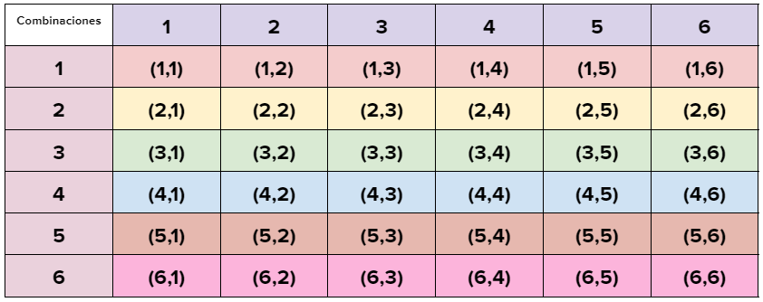
Paso 5: Usaremos la fórmula de probabilidad condicional.
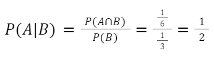
Así encontramos, como era de suponer, que la probabilidad no condicional es igual a la probabilidad condicional P(A/B).
De modo semejante:
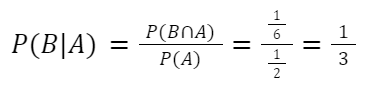
Por lo tanto, podríamos inclinarnos a decir que A y B son independientes si y sólo si P(B|A)=P(A) y P(A|B)=P(B). Aunque
esto sería esencialmente apropiado, hay otro método que evita la dificultad encontrada aquí, a saber, que ambos P(A) y P(B),
deben ser diferentes de cero antes de que las igualdades anteriores sean significativas.
Paso 6: Aplicando la fórmula de independencia de dos eventos.
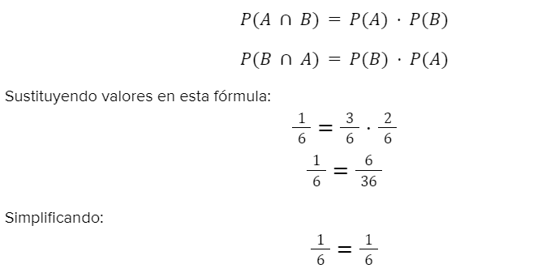
Así encontramos que, como ni P(A) ni P(B) son iguales a cero, las probabilidades no condicionales son iguales a las probabilidades
condicionales si y sólo si P(A∩B)=P(A)P(B).
Resultado. En estos eventos A y B definidos como "el primer dado muestra un número par" y "el segundo dado muestra
un 5 o un 6" respectivamente, hemos demostrado que estos eventos son independientes. Esto se evidencia en los cálculos de las
probabilidades condicionales y no condicionales, así como en la verificación de la igualdad de independencia. Además, hemos
establecido que la independencia de dos eventos implica que la probabilidad de la intersección de ambos eventos es igual al
producto de sus probabilidades individuales, siempre y cuando ambas probabilidades no sean cero.
━━━━━━━━━━━━━━━━━━━ ◦ ❖ ◦ ━━━━━━━━━━━━━━━━━
4.3.3 Ejemplo 7
La probabilidad de Carlos de aprobar en la materia de Estructuras Discretas es del 40%, y la probabilidad de Ana de
aprobar el mismo curso es de 70%. Si los eventos son independientes, encuentra las siguientes probabilidades:
a) La probabilidad de que ambos aprueben el curso.
b) La probabilidad de que ninguno apruebe el curso.
c) La probabilidad de que al menos uno apruebe el curso.
Paso 3: Haciendo la intersección de cada evento y aplicando la fórmula de independencia. Resolvemos para cada
inciso:
a) Ambos aprueben.
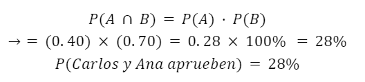
Resultado a) La probabilidad de que ambos aprueben el curso es del 28%. Esta es la multiplicación de las
probabilidades individuales de que Carlos y Ana aprueben.
b) Ninguno apruebe.
Usaremos la propiedad del complemento:
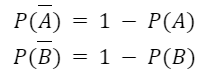
Ahora aplicaremos fórmula de independencia:
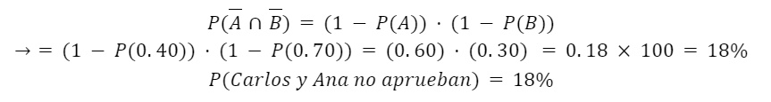
Resultado b) La probabilidad de que ninguno de ellos apruebe el curso es del 18%. Esto se obtiene utilizando
la independencia de los eventos.
c) Al menos uno apruebe.
Con los cálculos del inciso anterior:
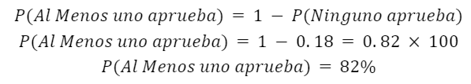
Resultado c) La probabilidad de que al menos uno de ellos apruebe el curso es del 82%. Esto se obtiene
utilizando la propiedad complementaria de la probabilidad.
━━━━━━━━━━━━━━━━━━━ ◦ ❖ ◦ ━━━━━━━━━━━━━━━━━
4.4 Teorema de Bayes
4.4.1 Ejemplo 8
Una planta productora de gelatinas cuenta con tres máquinas empacadoras. Así, la distribución del volumen de empaque se realiza de
la siguiente manera: Máquina 1: 38% Máquina 2: 32% Máquina 3: 30%
De esta manera, la probabilidad de que el empaque salga defectuoso es de 11%, 15% y 14%, respectivamente por cada máquina.
La gerencia de producción de la planta está interesada en conocer cuál es la probabilidad de que, si se selecciona una unidad al
azar y es defectuosa, esta se haya empacado en la máquina 2.
Paso 3: Luego, debe considerarse que las unidades defectuosas pueden provenir de M1, M2 o M3, por lo que a estas se les
considera eventos mutuamente exclusivos; esto es que el que una unidad haya sido producida en una máquina en específico no afecta
el hecho de que provenga de otras máquinas. Entonces:
Resultado. Por lo tanto, la probabilidad de que si se selecciona una unidad al azar y es defectuosa, esta se
haya empacado en la máquina 2 es de 36.42%.
━━━━━━━━━━━━━━━━━━━ ◦ ❖ ◦ ━━━━━━━━━━━━━━━━━
4.4.2 Ejemplo 9
Se tiene tres urnas con el siguiente contenido: la primera contiene 3 bolas blancas y 1 negra, la segunda 2 blancas y 2 negras y
la tercera 3 blancas. Se escoge una de las tres urnas al azar y se extrae de ella, también al azar, una bola que resulta ser blanca.
Dada esta información ¿cuál es la probabilidad de que la urna escogida haya sido la primera? ¿La tercera?
Paso 3: Luego, debe considerarse que las bolas blancas pueden provenir de U1, U2 o U3, por lo que a estas se
les considera eventos mutuamente exclusivos. Entonces:
Resultado. Por lo tanto, la probabilidad de que la bola blanca se haya elegido de la urna 1 es de 33.33%.
Y, de que se haya elegido de la urna 3 es de 44.44%.
━━━━━━━━━━━━━━━━━━━ ◦ ❖ ◦ ━━━━━━━━━━━━━━━━━
4.4.3 Ejemplo 10
Durante los últimos años se ha escrito mucho sobre la posible relación entre el fumar y el cáncer pulmonar. Supóngase que en
un centro médico, de todos los fumadores de quienes se sospecha que tenían cáncer pulmonar, el 90% lo tenía mientras que únicamente
el 5% de los no fumadores lo padecía. Si la proporción de fumadores es de 0.45, ¿cuál es la probabilidad de que un paciente con
cáncer pulmonar, seleccionado al azar, sea fumador?
Paso 3: Luego, debe considerarse que un paciente con cáncer pulmonar puede provenir de A1 o A2, por lo que a
estas se les considera eventos mutuamente exclusivos. Entonces: